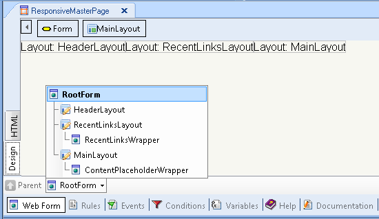

You can choose between the Web Abstract Editor and the HTML Editor for the different parts of the web form you are designing by nesting form layouts. The Root form is the root node of the tree structure composed of HTML and Abstract form nodes. The Root form can be HTML or an Abstract layout. ExampleIn the following example the "ResponsiveMasterpage" object has a main HTML form which includes three abstract editors, so the Root Form is HTML. 
|
| Backlinks | ||
| Add Html as Root Form | Add Layout as Root Form | Default Web Form Editor property |
| Use HTML As Root Form | Use Layout as Root Form |